The Avatar: The Last Airbender mobile game was released in 2023 for both iOS and Android platforms and was built using Unity. I have been part of the team since the project's inception, contributing to the creation of the design proposal deck for Square Enix, the investor. As a UI/UX designer, I played a key role in managing complex UX flows that involved multiple teams. I closely collaborated with other designers to enhance the game's overall quality.
UX/ UI Design
Photoshop, XD, Figma , Unity
Conduct research to understand the target users before initiating the project.
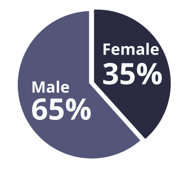
I analyzed competitor games by downloading them and conducting online research, including reviewing user feedback and reviews. I collected and organized the findings in a PowerPoint file for both personal reference and for team members who needed access to the information. This research helped identify common user preferences, expectations, and pain points. As a result, I gained a clearer understanding of what features and experiences users are most interested in.
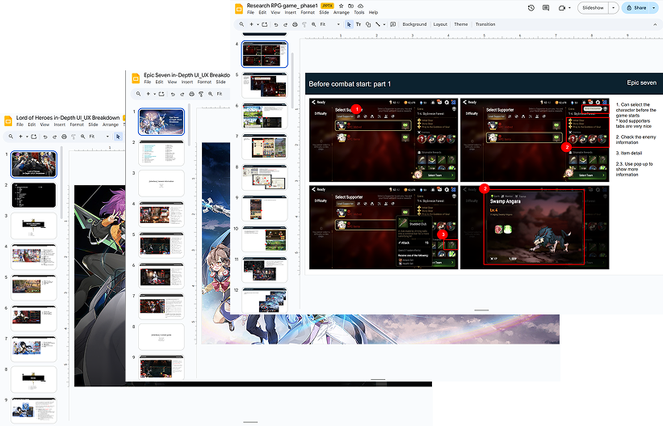
The game supports iOS and Android, with the largest platform screen ratio being 4:3 (tablet). It's important to ensure that the design fits within this 4:3 ratio, and we can use anchor points to make elements expand appropriately across different platforms.
Consider using a limited number of font styles. For headers, utilize the Avatar style font: Spirit Wilds, while for body text: Robotos, opt for a more standard font to ensure readability.
Design universal icons for use in the game, keeping them as simple as possible since they'll be placed within the app. Conduct in-house user testing to determine their optimal appearance. Additionally, consider adding tooltips to the icons to assist users
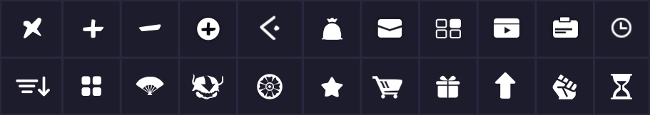
The art from art team and I applied the texts and UI elements around it.
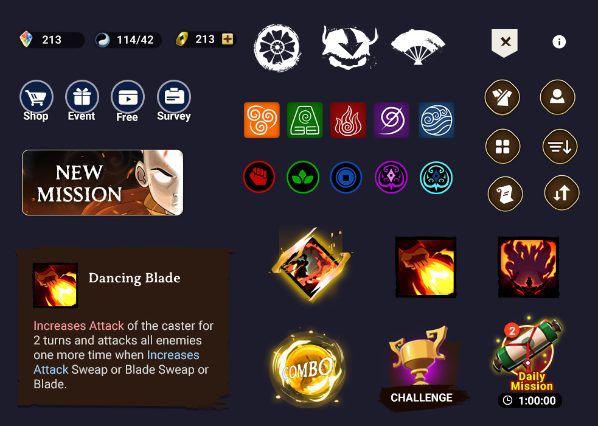
When I designed the icons, I attempted to differentiate them using colors while also providing distinct icons. This way, people who cannot distinguish colors can still understand the icons with the help of tooltips.
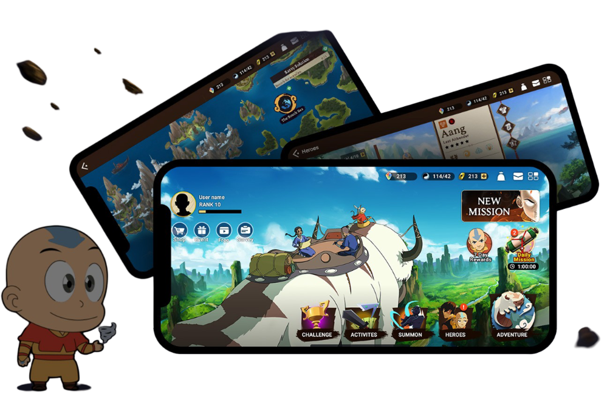
I prefer to break down the information architecture map when I work with a team, so that we can align with the plan effectively. Breaking it into smaller pieces is essential because sometimes it's challenging to communicate with the team when dealing with large maps. Here is a basic user flow that explains how a player enters the game and reaches the lobby screen.
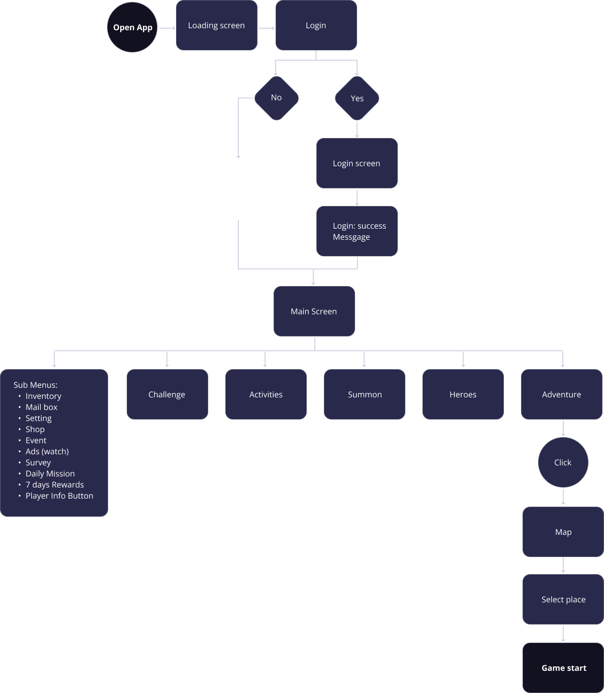
Designed low-fidelity wireframes for the complex user flow
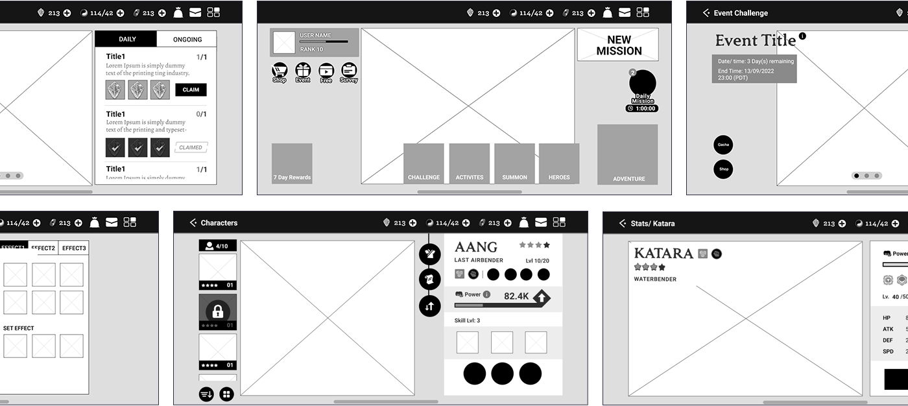
As a UX designer, my primary responsibility is to provide comprehensive guidelines for both the engineering and art teams, ensuring alignment with all involved teams.
Provide guidelines for changing the status of list items after the user clears a mission.
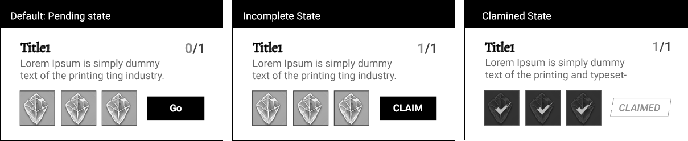
Due to technical restrictions, I began creating mockups with a 4:3 ratio. These anchoring mockups demonstrate how the layout will expand as the screen size increases. It's important to note that our current game engine doesn't support responsive design. The width stretches based on the anchoring points, while the height remains fixed.
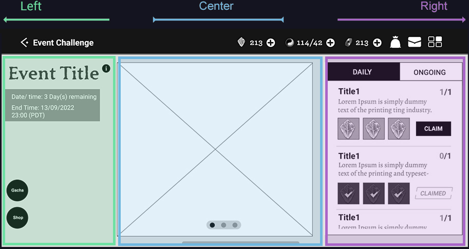
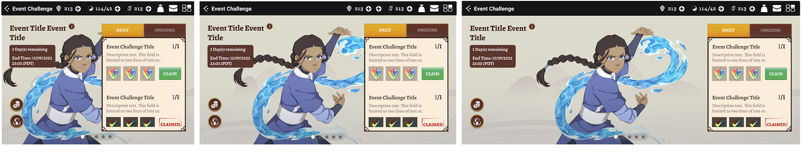
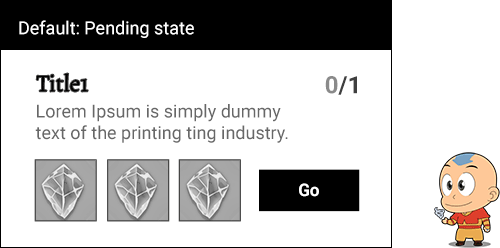
Once the mockup is reviewed by the game director and engineers, I conduct in-house usability tests using an XD and Invision prototype. Additionally, we share it with clients to provide them with more clarity about our plans. (We consistently receive positive feedback, and they are impressed, especially since they have never seen an active version of the paper prototype.) After collecting feedback from co-workers, I continually think about how to make the game better.
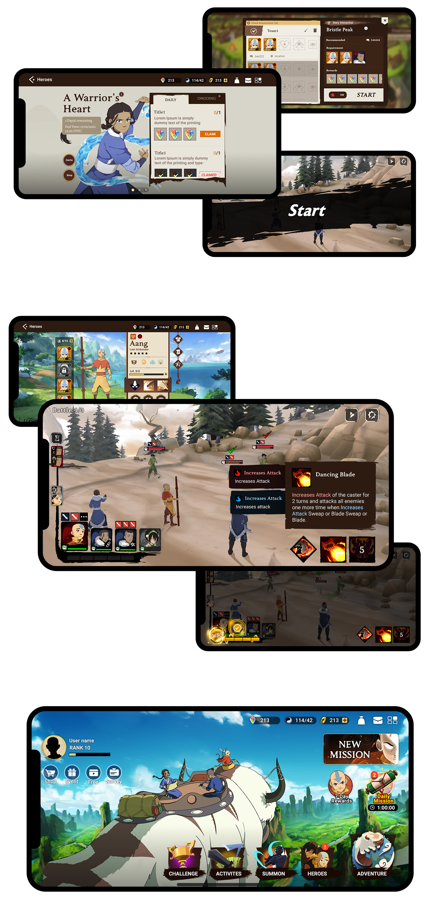
To boost user engagement, we conducted a survey using SurveyMonkey. Based on the data collected, we made enhancements to the game to improve the player experience.
Our team effectively communicated our requirements and successfully launched the game, which has received high ratings on both Google Play Store and the App Store.
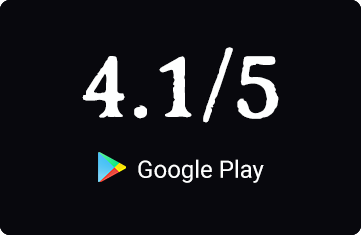
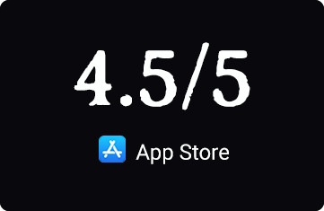
Continuously monitor user behavior and engagement through analytics and online comments to enhance the user experience of our game. AI can also help solve classic UX challenges. I was reading about how survey responses can change depending on where you ask the question, which can skew the data. It made me think about the projects I've worked on. We have a huge, untapped resource: player chat logs. Instead of just relying on surveys, we could use AI to analyze those conversations in real-time. The AI could automatically tag comments for sentiment—like frustration or excitement—and group them by topic. This would give us a much more authentic view of the player experience, helping us pinpoint exactly what to fix or what to build next.